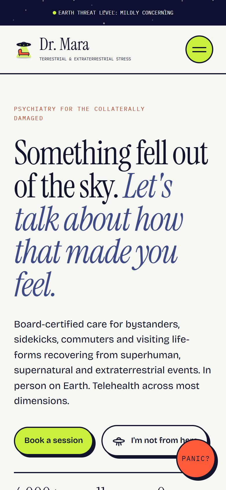
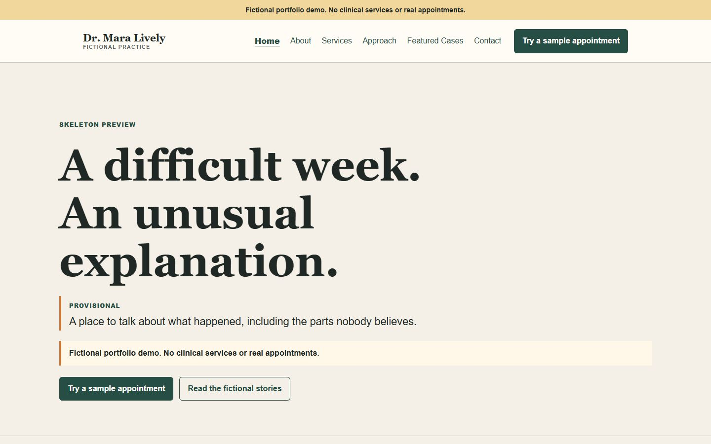

04Creative direction & web build · Fictional website concept
A psychiatry website for people standing too close to the incident.
Dr. Mara treats the fictional bystanders of impossible events: the commuter whose car was thrown, the intern bitten by the wrong spider, the neighbour who watched the sky open above the parking lot.
Dr. Mara is fictional. Not a real practice; no appointment can be booked.
Live · hosted on this portfolio · /demos/mara-lively
- Project
- Self-initiated fictional concept
- Role
- Concept, creative & copy direction
- Deliverable
- Responsive static site with interactive demos

The brief
Could the copy carry an absurd premise while the design behaved like a calm, trustworthy clinic?
The site could be funny, but the design could never laugh at its own joke. Every fictional patient is treated with empathy; the humour lands on the impossible universe around them.
- 01An original genre parody with no real characters or brands
- 02One deadpan voice across every page
- 03Enough working behaviour to feel like a product, not a mood board
Writing
Keep the voice deadpan.
The first version explained that it was quirky. The rewrite proves it with specific detail, delivered with a straight face.
A difficult week. An unusual explanation.
Something fell out of the sky. Let’s talk about how that made you feel.
A familiar superhero, by name
A very large, very green, very upset man
Indirect references kept the concept original and made better jokes.
Never make patients the punchline
Their feelings are always valid. The joke is the universe misbehaving around them.
Make bureaucracy the straight man
Treatment codes, coverage notes, intake language and case files treat every impossible event as ordinary paperwork.
One sincere release valve
A breathing overlay interrupts the comedy with a quieter moment, without promising a clinical outcome.
Section headings from the final site
- Does any of this sound familiar?
- Dr. Mara has never once been impressed by a cape.
- We bill the hero directly.
- People feel better. Eventually, so do their cars.
Design
The clinic stays calm. The universe doesn’t.
Generous space, restrained colour and an editorial serif give the interface its composure. The incidents happen outside the window.
#F6F7F3Base ground#DCEAE3Calm sections#0D1030Night and drama#12142BText and outlines#C8F03CPrimary actions#FF5B3AAlarms only

Proportion as discipline
Paper and Scrub about 45%, Deep Space 30%, Ink 15%. Beam and Panic together stay under 10%.
Motion as contrast
The flying car establishes the premise. Everything else stays still until someone interacts.
Every interaction has a job
Treatment cards reveal more detail, the Panic Meter parodies a diagnosis, and the intake shows the journey without pretending to book.
Development
A small product, not a mood board.
The creative direction became a browser-ready static site people can actually explore.
- Static HTML
- Python build script
- CSS keyframes
- Vanilla JavaScript
What it does
- Eight treatment cards that flip and return
- Panic Meter with three outcomes
- Booking intake with validation and a demo confirmation
- Breathing overlay, Case Files journal and a custom 404
How it was checked
- 25 pages built; all 806 local references pass
- No horizontal overflow from 360 to 1600 px
- Dialogs close with Escape and keep keyboard focus inside
- Forms have no endpoint and store nothing
Evolution
From skeleton to redesign.
The first version had the right subject. Writing the rules first is what made the redesign work.
Skeleton preview
“A difficult week. An unusual explanation.”
Right subject and a few story ideas, but it explained that it was quirky instead of proving it.

Rules before redesign
Keep the voice deadpan, never make patients the punchline, let specific detail carry the humour, concentrate motion, keep the fiction visible.
Cosmic calm redesign
“Something fell out of the sky. Let’s talk about how that made you feel.”
A full system: tokens, treatment taxonomy, case-file format, interface states, illustration direction and interactions.
The result
A concept carried into a working browser experience.
The hardest part was not writing the jokes. It was making the interface refuse to laugh at them.
Absurd content inside a credible system, and expressive interaction without constant noise.
See it live
The finished Dr. Mara site is live.
hosted on this portfolio · /demos/mara-lively
Self-initiated concept, creative direction, copy direction and interaction direction by Ahsan Khan.
Dr. Mara is a fictional portfolio concept, not a real practice or commissioned client engagement. No healthcare service, endorsement or measured business outcome is claimed.